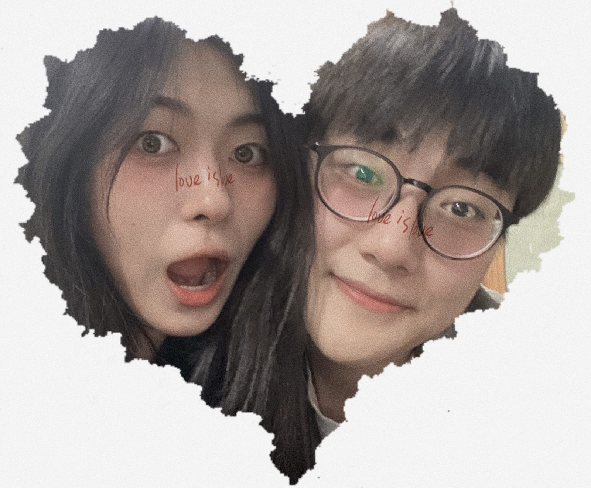
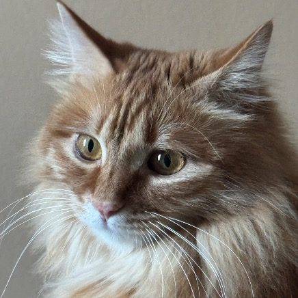
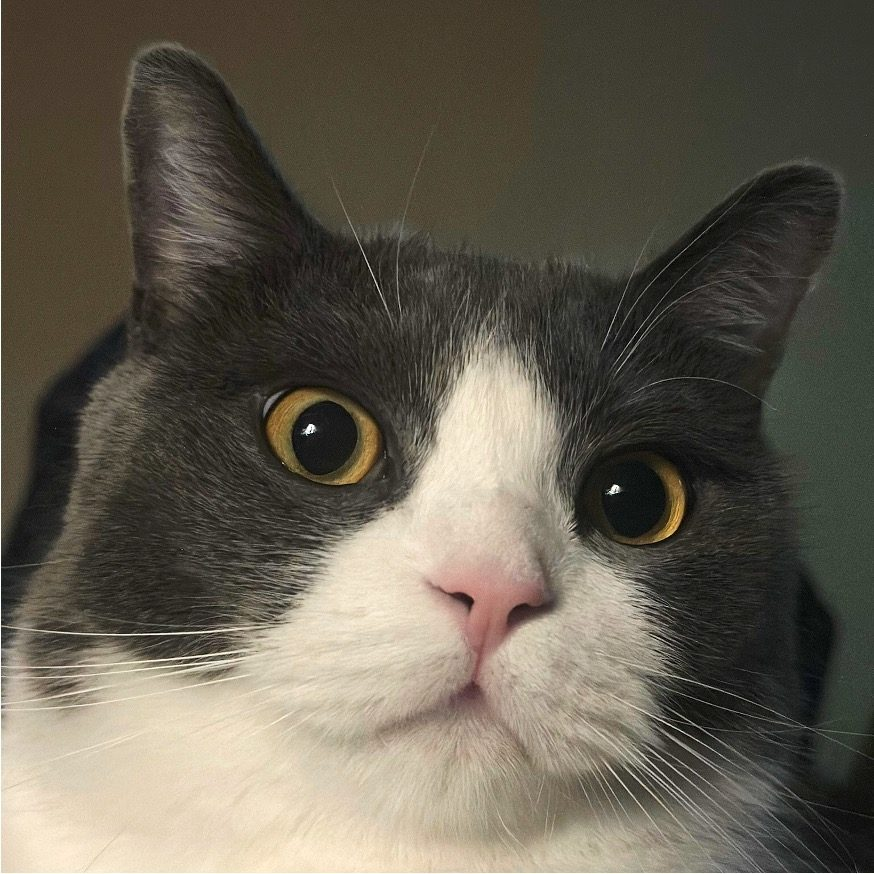
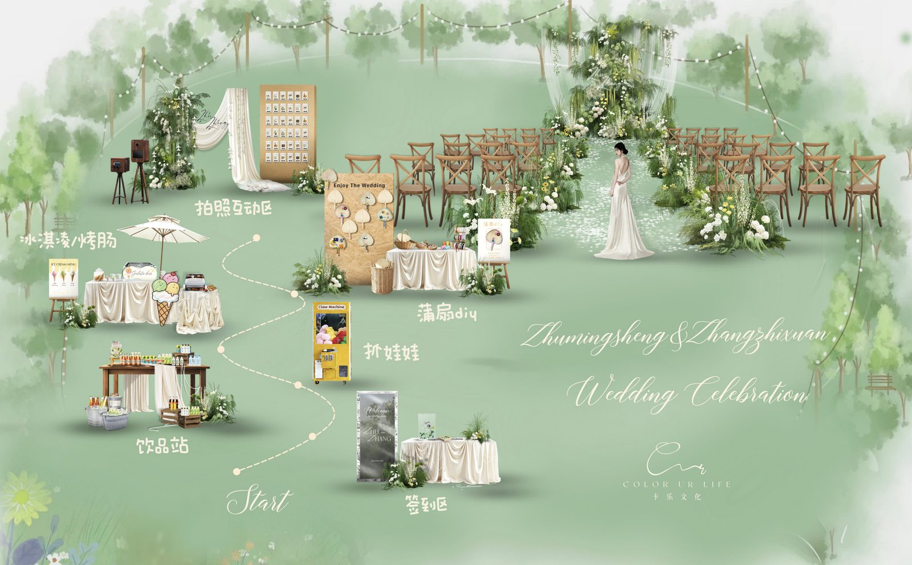

双鱼座 · INTP
白羊座 · ESFJ
如果多年以后有人问起，新郎一定会说，那是他人生里最重要的一句开场白。
2020年六月初的天津，暑气未至，阳光柔软。南开大学分子所305实验室里，一个土生土长的天津小伙，遇见了那个刚从辽宁本溪来的女孩。女孩站在实验室的仪器之间，阳光折射出细碎的光斑落在她肩上。新郎走过去，说了一句看似平淡如水的话："师妹，我是隔壁实验室的朱明盛。"
那时候谁也不知道，这几个字，会改变两个人的一生。
那是疫情笼罩的夏天。口罩成了所有人的日常，却也成了他们之间第一个默契——遮住了半张脸，反而让彼此更认真地去看对方的眼睛。
相识不过三十三天，两颗心已经在实验室的朝夕相处中悄然靠近。七月五日，他们按下了人生中第一张合照的快门。照片里的新郎笑得爽朗，新娘眉眼弯弯。从这一天起，南开园的每一条路，都多了一对并肩的背影。
那一年，新郎二十四岁，新娘二十三岁。在不确定的年份里，他们确定了一件事——就是这个人了。
在一起之后，他们像所有热恋中的人一样翻看彼此的过往。然后他们发现了一件让两个理科生都愣住的事——
新郎过阳历生日，2月28日。新娘过阴历生日，也是二月二十八日。同一组数字，跨越了两套历法，像一个穿越了时空的暗号。而翻出当年的学生证，他们的学号末尾，竟都是同样的四个数字：1109。
一个在天津，一个在本溪，相隔八百公里。是基因？是概率？是巧合？两个学过统计学的人相视一笑——有些答案，不必计算。有些事，在相遇之前就已经写好了。
恋爱最初的两年，世界被疫情切割成碎片，但他们的小世界却完整而滚烫。那两年里，他们是实验室里最早到、最晚走的那一对。一起养细胞、跑胶、采集荧光图像——科研的枯燥在两个人面前变得不值一提。实验失败了，新娘递过一杯冰可乐；论文被拒了，新郎说"走，去吃顿好的"。
对，吃饭——这大概是那两年里最重要的事。
后来的日子里，他们一起吃过的饭越来越多。二食堂二楼的重庆小面、西南村居民楼的川菜馆、封校期间只能点到的外卖炸鸡、冬天做完实验深夜溜出去吃的铜锅涮肉。
封校的日子里，他们不能出校园，能吃到的选择少得可怜。但反而是在那些受限的日子里，两个人研究出了各种花式吃法：用休息室的小电锅偷煮小火锅、用网购的蛋糕模具自己制作生日蛋糕。后来封控结束、城市解封，他们可以去任何想去的地方吃饭了，却总还是觉得——那时候在南开校园里一起吃的每一顿，都是这辈子最香的味道。
有人问他们那两年是怎么过来的。新娘想了想说："就……一起吃了很多很多顿饭。" 新郎在旁边补了一句："以及，每一顿饭都是和她一起。"
爱一个人，就是和他一起吃很多很多顿饭。三餐四季，百吃不厌。
爱不是轰轰烈烈的宣言，而是日复一日的陪伴
和一顿又一顿的晚饭
2022年5月25日，新娘穿上了硕士服。马蹄湖边，她手捧鲜花，身旁站着一路陪她熬夜写论文、替她带早饭的那个人。快门按下的时候，新郎看着镜头里的女孩，心里只有一个念头：她值得世间所有的好。
两年后的2024年6月15日，轮到新郎了。从一个在实验室里横冲直撞的研一新生，到戴上博士帽——六年里每一个通宵的夜晚、每一组跑崩了又重来的数据、每一次想要放弃又被另一个人拽回来的瞬间，新娘都在。
他们不是彼此的附属，而是彼此的光。你照亮我一段路，我也照亮你一段路，走着走着，就走进了同一片未来。
家不是一个地点，家是两个人，再加两只猫

猫中"大小姐"
性格傲娇 · 爱晒太阳
独处时会可怜巴巴地看着监控

艾莉的小弟兼跟屁虫
性格憨厚 · 爱干饭
偶尔会在家里跑酷-黑皮体育生
2023年7月28日，第一只小猫闯进了他们的生活。他们给她取名"朱艾莉"——姓氏随了爸爸，名字随了妈妈的气质，妥妥的嫡长女待遇。可是每次从监控摄像头里看到艾莉独自趴在空荡荡的房间里，两个人心都揪了。
于是不到三个月，"张大发"来了——名字一听就是来给姐姐当小弟的。从此，出租屋里热闹了起来：两只猫追逐打闹，两个人手忙脚乱。
也是在那一年，他们忽然懂了——家的形状，不是房子有多大，而是推开门，有人在等，猫在叫，灯光是暖的。
2024年7月5日，在一起整整四周年。新郎博士毕业刚满二十天，两个人做了一件他们蓄谋已久的事——走进民政局，把彼此的名字郑重地写进了同一本红色的结婚证。
没有铺张的仪式，没有刻意的排场。他们选了一个对他们来说最特别的日子——不是随便挑的良辰吉日，而是四年前他们决定在一起的那一天。从今往后，7月5日既是相爱的纪念日，也是合法的结婚纪念日。
后来新郎跟朋友说起这件事，笑称："用领证庆祝纪念日，是这辈子做过最浪漫的数学题——一个日子，两份意义，一辈子回忆。"
领证不是终点，新郎心里一直欠新娘一场正式的告白
领证，是两个人面对未来的默契与笃定——在那一天，他们用最务实的方式告诉彼此：我愿意和你共度余生。但新郎心里始终觉得，新娘配得上一场郑重而浪漫的求婚。他不愿让法律程序替代了那个单膝跪地的仪式感，更不愿让新娘在往后回忆时，缺了一个"他说嫁给我吧"的瞬间。
于是，2025年5月21日，日本，富士山脚下。雪山在前，夕阳倾泻，新郎从口袋里掏出那枚藏了很久的戒指，单膝跪下。
新娘说了"好"。尽管他们早已是法律上的夫妻，但那一刻，她眼里的泪光和五年前第一张合照里的笑一模一样。富士山的雪顶在落日里泛着金色的光，像是群山也在鼓掌。
他们说——不如结个婚吧。
从南开园分子所305的一句"你好"，到富士山脚下的单膝跪地；
从两份写着同一个学号尾数的学生证，到两本印着同一个日期的结婚证。
六年不长——还不够他们把想说的话说完；
六年不短——足够让一个天津男孩和一个本溪女孩，
把彼此的姓氏，写进自己往后余生的每一个日暮晨昏。
二〇二六年七月五日，他们的六周年纪念日。
他们决定——结个婚，请大家一起庆祝。
缘分从来不是惊天动地的剧本
它是实验室里一句平淡的开场白
是两套历法里同一个数字的温柔暗号
是一起吃了九百顿饭还没有腻的漫长陪伴
是两只猫、两个人、一本红色结婚证
是富士山下迟到了一年却恰逢其时的单膝跪地
——是六年前种下的一颗种子，今天终于开了花。
—— 六 年 ， 从 实 验 室 到 婚 纱 ——
❦ 婚 礼 邀 约 ❦
天谊英伦古堡庄园宴会厅
可拖动缩放查看周边

15:20 开始 · 甜品台 · 互动游戏 · 合影墙
从南开园分子所305的一句"你好"，到天谊英伦古堡的红毯。
新郎与新娘，诚挚邀请您——
来见证，来欢笑，来与他们一起庆祝。